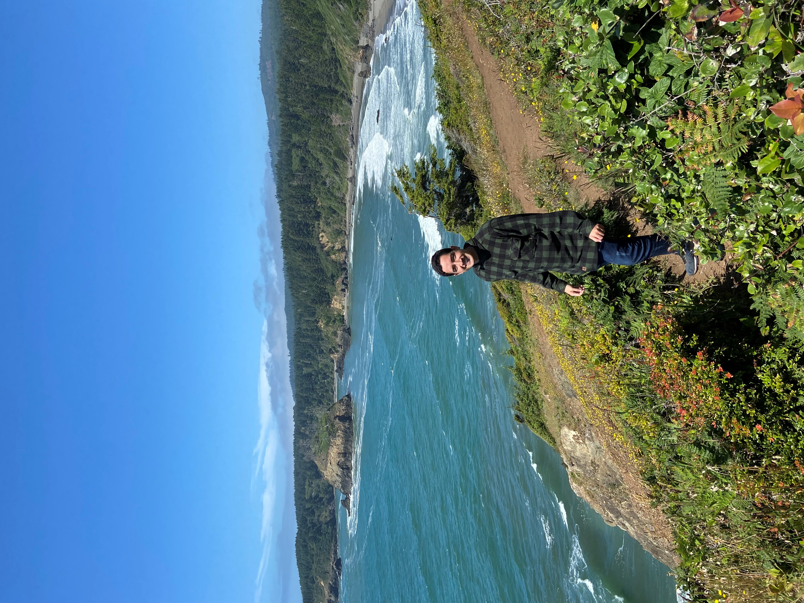

Me chamo Julio Prado, tenho 26 anos e sou brasileiro, nascido em São Paulo capital. Sou licenciado e bacharel em Educação Física pela Universidade Cruzeiro do Sul. Ex-funcionário da prefeitura de Suzano e voluntário em um trabalho de ensino, decidi me tornar um Full Stack Developer a fim de ter um trabalho flexível com meu estilo de vida.